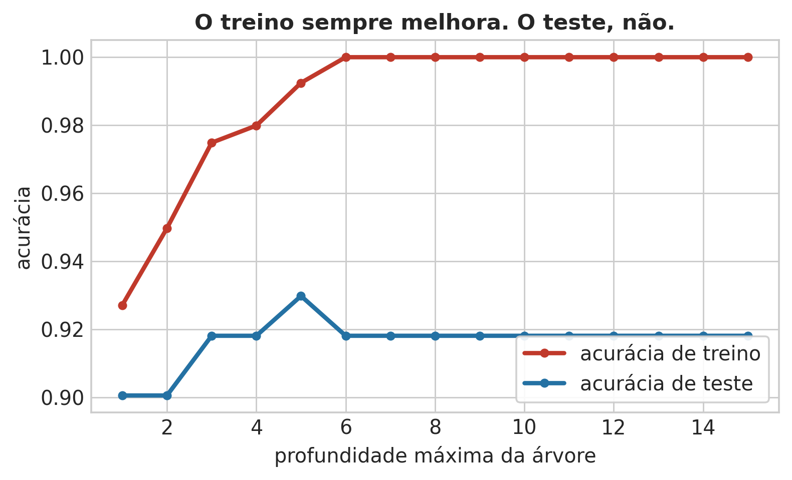
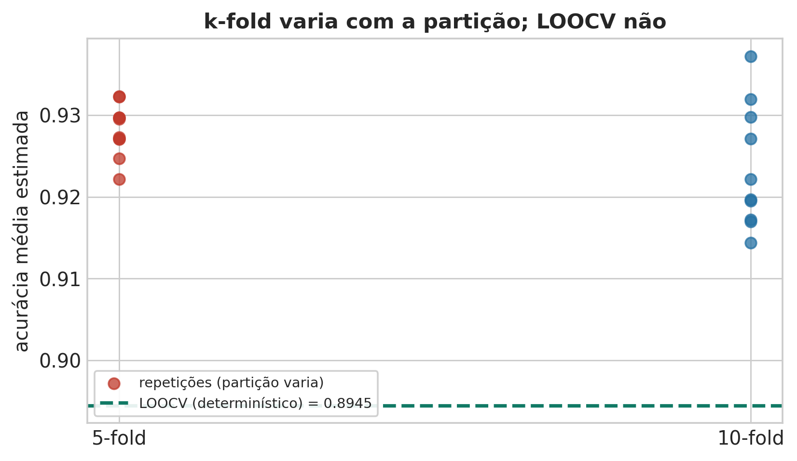
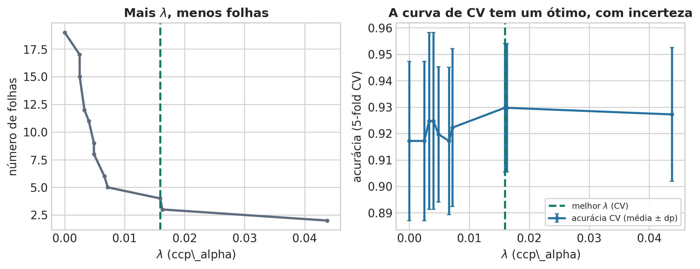
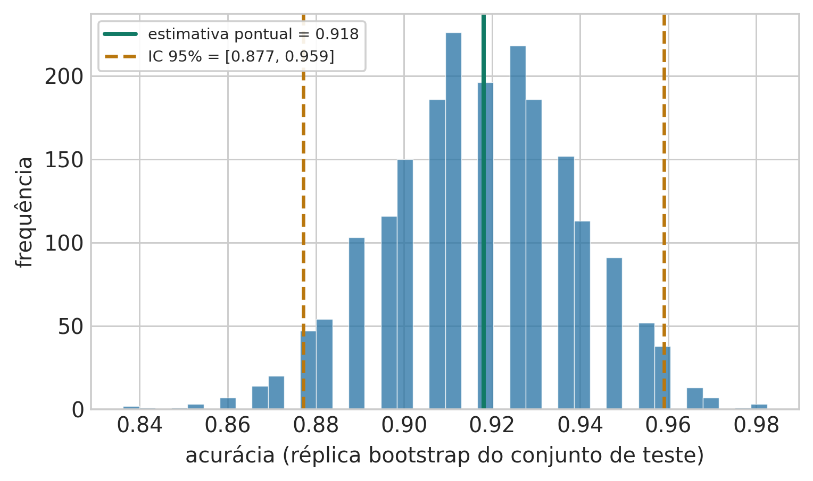
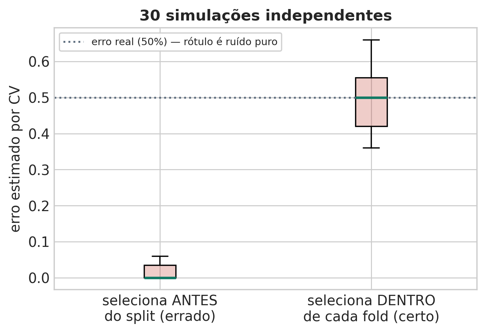

Profundidade 1: treino=0.9271 teste=0.9006
Profundidade 5: treino=0.9925 teste=0.9298 <- melhor teste
Profundidade 6+: treino=1.0000 teste=0.9181Aula 4 — Fundamentos Estatísticos do Aprendizado Supervisionado
Marcos M. Raimundo — Instituto de Computação, UNICAMP
24 de agosto de 2026
A Aula 3 podou uma árvore de decisão “olhando o gráfico”: a acurácia de validação subia, atingia um pico e depois caía, e escolhemos visualmente o ponto de virada. Isso funciona num quadro didático, mas esconde uma pergunta que qualquer projeto real precisa responder de forma sistemática: como escolher a complexidade certa sem espiar os dados que vão medir o sucesso final?
Esta aula muda o objeto de estudo. Em vez de um modelo específico, o assunto é o procedimento de avaliar e escolher entre modelos. A tese central: o erro medido nos próprios dados de treino é uma estimativa otimista — não porque o modelo trapaceia, mas porque ele foi ajustado exatamente para minimizar esse número.
Nota: esta é a primeira aula do curso a usar um conjunto de dados real — o Breast Cancer Wisconsin (569 pacientes, diagnóstico benigno ou maligno a partir de medidas do núcleo celular) — em vez de dados sintéticos como nas Aulas 1–3.
O roteiro, em quatro perguntas:
Vamos treinar árvores de decisão de profundidade crescente no Breast Cancer Wisconsin, medindo a acurácia tanto nos dados usados para treinar quanto numa fatia de 30% nunca vista durante o ajuste.

Profundidade 1: treino=0.9271 teste=0.9006
Profundidade 5: treino=0.9925 teste=0.9298 <- melhor teste
Profundidade 6+: treino=1.0000 teste=0.9181O padrão é sistemático, não um acidente desta amostra: a acurácia de treino cresce monotonicamente e atinge 100% a partir da profundidade 6 (a árvore memoriza completamente as 398 pacientes de treino). A acurácia de teste sobe até a profundidade 5 (92,98%) e depois estabiliza um pouco abaixo (91,81%) — a árvore memorizada não generaliza melhor que uma moderadamente podada.
Formalizando: seja \(\hat{R}(\theta) = \frac{1}{N}\sum_i \mathcal{L}(y_i, f_\theta(x_i))\) o erro empírico medido nos mesmos dados usados para ajustar \(\theta\), e \(R(\theta) = \mathbb{E}_{(X,Y)\sim P}[\mathcal{L}(Y, f_\theta(X))]\) o risco esperado sob a distribuição populacional. \(\hat{R}(\theta)\) é um estimador enviesado para baixo de \(R(\theta)\) precisamente porque \(\theta\) foi escolhido observando os mesmos pontos usados para calcular \(\hat{R}\) — o modelo tem, literalmente, a resposta da prova antes de fazer a prova.
Escreva sua resposta e compare com um colega antes de avançar (2 min).
Se o erro de treino é otimista, a solução óbvia é reservar uma fatia dos dados que o ajuste nunca vê. Mas um único split levanta um problema sutil: se usarmos essa mesma fatia repetidas vezes para escolher entre profundidade 3, 5, 8, 12… — cada escolha “espia” um pouco mais esse conjunto, e a estimativa final de desempenho fica ela mesma otimista, só que num grau mais discreto do que o erro de treino puro.
A prática correta separa três papéis:
O restante desta aula formaliza a etapa de validação — e o problema prático de que, com dados escassos, “reservar uma fatia” para validação é caro. A validação cruzada existe para usar os dados de forma mais eficiente sem abrir mão do princípio de nunca avaliar um modelo nos mesmos pontos usados para ajustá-lo.
A validação cruzada em \(k\) partes (k-fold) resolve o problema de “dados escassos para validação” reciclando a amostra inteira, tanto para treino quanto para validação — só que nunca ao mesmo tempo. O livro-texto desta aula (Hastie, Tibshirani & Friedman, ESL) define o objetivo com precisão:
Tradução livre: “Esse método estima diretamente o erro esperado fora da amostra \(\text{Err} = \mathbb{E}[\mathcal{L}(Y, \hat{f}(X))]\), o erro médio de generalização quando o método \(\hat{f}(X)\) é aplicado a uma amostra de teste independente, vinda da distribuição conjunta de \(X\) e \(Y\)” (ESL, §7.10, p. 241).
Este é o elo que dá nome ao bloco: cada fold de validação é, sob a suposição de amostra i.i.d. de \(P(X,Y)\), uma aproximação de “coletar uma nova amostra de teste”. O procedimento:
Cada uma das \(k\) rodadas simula o que aconteceria se, de fato, tivéssemos coletado uma amostra de teste nova e independente — e a média sobre \(k\) rodadas reduz a variância dessa simulação em relação a um único split de validação.
Estratificação. No nosso dataset, 62,7% das pacientes são benignas e 37,3% malignas — um desbalanceamento moderado, o mesmo tipo de cuidado já visto na Aula 1. Um particionamento aleatório ingênuo pode, por azar, concentrar a maioria dos casos malignos num único fold. StratifiedKFold corrige isso, preservando a proporção de diagnóstico em cada partição:
Proporção de malignos em cada fold (estratificado):
fold 1: 0.375
fold 2: 0.375
fold 3: 0.375
fold 4: 0.367
fold 5: 0.367
Proporção no conjunto de treino inteiro: 0.372Cada fold preserva a proporção original (~37%) dentro de uma margem pequena — sem estratificação, essa variação poderia ser bem maior em folds pequenos.
Escreva sua resposta e compare com um colega antes de avançar (2 min).
\(k\) não é um detalhe de implementação — é uma escolha estatística. No caso extremo \(k=N\) (leave-one-out, LOOCV), cada modelo é treinado com \(N-1\) pontos — quase a amostra inteira — então o viés desse estimador é mínimo. Mas o ESL alerta:
Tradução livre: “Com \(K=N\), o estimador de validação cruzada é aproximadamente não-enviesado para o erro de predição esperado (verdadeiro), mas pode ter alta variância, porque os \(N\) ‘conjuntos de treino’ são tão parecidos uns com os outros” (ESL, §7.10.1, pp. 242–243). O texto recomenda \(K=5\) ou \(10\) como escolha prática padrão.
Vamos comparar isso empiricamente na nossa árvore podada (do bloco seguinte). Repetimos 5-fold e 10-fold dez vezes cada, variando apenas a partição aleatória, e comparamos com o LOOCV (que é determinístico — não há aleatoriedade de partição a repetir):

5-fold: média das 10 repetições = 0.9282, desvio-padrão entre repetições = 0.0030
10-fold: média das 10 repetições = 0.9236, desvio-padrão entre repetições = 0.0071
LOOCV (398 ajustes, um por paciente): 0.8945Três achados honestos, não forçados para bater com a teoria:
\(k=5\) ou \(k=10\) seguem sendo a escolha prática padrão: bem mais baratos que LOOCV (uma única árvore grande tem \(N=398\) ajustes no LOOCV contra apenas 5 ou 10 no k-fold) e, na prática, competitivos em qualidade de estimativa.
A Aula 3 introduziu o critério de custo-complexidade \(C(T) = \sum_\tau Q_\tau(T) + \lambda|T|\) e podou “olhando o gráfico” de um único split treino/validação. Fechamos aquele gancho agora, usando cost_complexity_pruning_path (a mesma ferramenta da Aula 3) e escolhendo \(\lambda\) (ccp_alpha) por 5-fold CV estratificada:

Árvore completa (sem poda): 19 folhas, acurácia de teste = 0.9181
Melhor lambda por CV: 0.01592 -> 4 folhas
CV: 0.9297 ± 0.0243 Teste: 0.9181O resultado é um argumento direto a favor da parcimônia: a árvore escolhida por CV tem 4 folhas, contra 19 na árvore completa — e as duas atingem a mesma acurácia de teste (91,8%). Nenhuma das 15 folhas extras da árvore completa contribuiu para generalização; elas só memorizaram ruído específico do conjunto de treino.
Um refinamento: a regra de 1 desvio-padrão. Em vez de escolher o \(\lambda\) que maximiza a média de CV, a regra “1-SE” escolhe o modelo mais simples cuja acurácia de CV esteja a até um erro-padrão do melhor valor observado — reconhecendo explicitamente que a própria estimativa de CV tem incerteza, e que não vale a pena pagar complexidade extra por uma diferença de acurácia que pode ser só ruído de amostragem.
Regra 1-SE: lambda=0.04378 -> 2 folhas
CV: 0.9272 Teste: 0.9006A árvore “1-SE” fica ainda mais simples (2 folhas) e paga um preço real de acurácia de teste (90,1% contra 91,8%) — um lembrete honesto de que a regra de parcimônia não é gratuita neste caso específico; ela é uma escolha deliberada de trocar um pouco de desempenho por uma árvore muito mais interpretável (2 folhas cabem numa frase; 4 já exigem um parágrafo).
Escreva sua resposta e compare com um colega antes de avançar (2 min).
A validação cruzada responde “qual é o erro esperado deste procedimento?”. O Bootstrap responde uma pergunta diferente e complementar: “quão incerta é uma estatística que já calculei a partir da minha amostra?” O ESL define a ideia de forma geral:
Tradução livre: “O Bootstrap é uma ferramenta geral para avaliar a precisão estatística. […] A ideia básica é sortear, com reposição, conjuntos de dados a partir dos dados de treino, cada amostra do mesmo tamanho que o conjunto de treino original. Isso é feito \(B\) vezes […], produzindo \(B\) conjuntos de dados bootstrap” (ESL, §7.11, pp. 249–250).
A acurácia de teste da nossa árvore de 4 folhas foi 91,8% — mas esse número, sozinho, esconde quanta confiança devemos depositar nele. Duas perguntas distintas, duas formas de usar o Bootstrap:
1. Quão incerta é a acurácia medida, dado que o conjunto de teste tem só 171 pacientes? Reamostramos, com reposição, os acertos e erros já observados no teste:

Acurácia pontual: 0.9181
Bootstrap (B=2000): média=0.9170, desvio-padrão=0.0215
Intervalo de confiança 95% (percentílico): [0.8772, 0.9591]O intervalo [87,7%, 95,9%] é largo — com apenas 171 pacientes de teste, a acurácia pontual de 91,8% poderia facilmente ter saído entre 88% e 96% por puro acaso da amostragem.
2. Quão instável é o próprio modelo ajustado, dado que a amostra de treino também é finita? Aqui reamostramos o conjunto de treino (com reposição), reajustamos a árvore em cada réplica, e avaliamos sempre no mesmo conjunto de teste — mais próximo da formalização \(S(Z)\) do ESL, em que \(Z\) é a amostra de treino inteira:
Bootstrap com reajuste (B=200): média=0.9161, desvio-padrão=0.0139
Intervalo de confiança 95%: [0.8889, 0.9358]O intervalo aqui é um pouco mais estreito ([88,9%, 93,6%]) — reflete a instabilidade do procedimento de ajuste (qual árvore de 4 folhas sai de cada amostra de treino reamostrada), uma quantidade conceitualmente diferente da incerteza de medir a acurácia num teste fixo.
A diferença que fica desta seção: CV estima o risco esperado de um procedimento (uma média sobre folds, cada um vindo de uma partição diferente); Bootstrap estima a variabilidade amostral de uma estatística já calculada (uma distribuição inteira de valores plausíveis, não só uma média).
Escreva sua resposta e compare com um colega antes de avançar (2 min).
O jeito errado de fazer validação cruzada. O ESL descreve um cenário revelador: um conjunto com \(N=50\) amostras e \(p=5\,000\) atributos, todos estatisticamente independentes do rótulo (ruído puro) — o erro real de qualquer classificador é, portanto, 50%. Uma prática comum, e sutilmente errada: (1) selecionar os 100 atributos mais correlacionados com o rótulo usando toda a amostra; (2) treinar um classificador só com esses atributos; (3) validar por CV. Reproduzimos o experimento de forma independente:

Jeito ERRADO — erro médio de CV: 0.015 (erro real: 0.50)
Jeito CERTO — erro médio de CV: 0.491 (erro real: 0.50)O resultado é dramático: selecionar atributos usando a amostra inteira antes de particionar em folds produz um erro estimado de CV de \({\sim}1{,}5\%\) — quando o erro verdadeiro é 50%. Fazer a seleção dentro de cada fold, usando só os dados de treino daquele fold, recupera uma estimativa honesta (\({\sim}48\%\), muito perto do valor real). O problema: no jeito errado, os atributos “já viram” os rótulos do fold de validação durante a etapa de seleção — a validação deixa de ser independente do ajuste, mesmo que o classificador final pareça respeitar a partição.
A regra prática: qualquer transformação que “aprenda” algo dos dados — seleção de atributos, normalização, imputação de valores faltantes, redução de dimensionalidade — precisa ser recalculada dentro de cada fold de treino, nunca na amostra inteira antes do split.
Reportar só a média é enganoso. O próprio ESL observa, sobre um experimento de CV real:
Tradução livre: “A acurácia média de validação cruzada gira em torno do valor esperado real […] Por outro lado, existe uma variabilidade considerável no erro, o que reforça a importância de reportar o erro-padrão estimado da estimativa de CV” (ESL, §7.10.3, p. 249).
Vimos isso diretamente na nossa curva de poda: a acurácia de CV do melhor \(\lambda\) foi \(92{,}97\%\), mas com um desvio-padrão de \(2{,}43\%\) entre os 5 folds — um número sozinho, sem essa segunda informação, sugere mais precisão do que a validação cruzada realmente entrega.
Escreva sua resposta e compare com um colega antes de avançar (2 min).
Voltando às quatro perguntas da abertura:
O fio que une os quatro blocos centrais: nenhuma estimativa de desempenho é um número exato. Ela vem com um viés (o erro de treino) ou com uma variância (a estimativa de CV, o intervalo do Bootstrap) que precisa ser levada em conta — e ignorá-la é o erro estatístico mais caro e mais comum na prática de aprendizado de máquina.
A intuição desta aula — “um modelo mais flexível se ajusta melhor ao treino, mas isso não garante melhor generalização” — reaparecerá na Aula 8 formalizada como a decomposição viés-variância, decompondo matematicamente o erro esperado em viés ao quadrado, variância do estimador e ruído irredutível. Antes disso, porém, a Aula 5 constrói o primeiro modelo paramétrico do curso — regressão linear — e mostra que ajustá-lo por mínimos quadrados é, sob um modelo de ruído gaussiano, exatamente o mesmo que ajustá-lo por máxima verossimilhança: o mesmo princípio unificador que já apareceu em cada aula até aqui, agora aplicado a alvos contínuos.
Explique por que \(\hat{R}(\theta)\), o erro medido nos mesmos dados usados para ajustar \(\theta\), é um estimador enviesado do risco esperado \(R(\theta)\). Por que esse viés tende a crescer com a flexibilidade do modelo (compare uma árvore de profundidade 1 com uma de profundidade 15 no nosso experimento)?
Um colega decide normalizar todos os atributos (subtrair a média, dividir pelo desvio-padrão) usando a base de dados inteira, e só depois faz uma validação cruzada de 5 folds. Explique por que isso é uma forma de vazamento de dados, análoga ao experimento de seleção de atributos desta aula, e descreva como corrigir o procedimento.
A árvore escolhida pela regra de 1 desvio-padrão teve acurácia de teste pior do que a árvore de máxima acurácia de CV, mas com metade das folhas. Discuta em que cenários essa troca (menos acurácia por mais simplicidade) pode ser a escolha certa, e em quais não seria.
Cada bloco de 4 itens trata do mesmo tema. A questão só é considerada correta se todos os 4 itens forem julgados corretamente (deixar em branco tem penalidade de 20% da nota da questão).
( ) No limite em que a profundidade da árvore não é limitada e há um ponto de treino distinto por folha, o erro de treino tende a \(0\%\), independentemente de quão complexa seja a fronteira real entre as classes.
( ) Se a árvore de profundidade 15 tem a mesma acurácia de teste que a árvore de profundidade 6, isso prova que a árvore mais profunda é necessariamente pior no teste do que uma menos profunda.
( ) Num modelo de previsão de preços de imóveis ajustado com um polinômio de grau muito alto (que passa exatamente por todos os pontos de treino), o erro de treino seria próximo de zero, mas isso não garante nada sobre o erro em imóveis não vistos.
( ) Como o erro de treino tende a subestimar o erro de generalização, conclui-se que um modelo com erro de treino alto necessariamente generaliza melhor do que um com erro de treino baixo.
( ) No limite em que o conjunto de teste é consultado repetidas vezes durante o ajuste de hiperparâmetros, a estimativa final de desempenho no teste se torna tão otimista quanto medir no próprio conjunto de treino.
( ) Se o conjunto de validação, em vez do de teste, fosse consultado repetidamente para escolher hiperparâmetros, isso não teria custo estatístico algum, pois validação existe exatamente para ser consultada quantas vezes for preciso.
( ) Numa competição de ciência de dados, o “leaderboard público” funciona como um conjunto de validação consultável repetidamente; competidores que otimizam demais para ele costumam piorar no leaderboard privado (o teste verdadeiro) — o overfitting ao leaderboard.
( ) Como o conjunto de treino é usado para ajustar os parâmetros do modelo, conclui-se que o conjunto de validação é usado para ajustar os dados do modelo (limpá-los ou transformá-los), não seus hiperparâmetros.
( ) No limite em que \(k=N\) (LOOCV), cada fold de validação contém exatamente um único ponto.
( ) Se, em vez de treinar \(k\) modelos diferentes, k-fold CV usasse um único modelo treinado com todos os dados para avaliar cada fold de validação, a estimativa resultante deixaria de simular uma amostra de teste verdadeiramente independente do ajuste.
( ) Num estudo médico com pacientes de 10 hospitais diferentes, se cada fold de uma 5-fold CV misturar aleatoriamente pacientes de todos os hospitais (em vez de manter hospitais inteiros em folds separados), a CV pode superestimar o desempenho num hospital totalmente novo.
( ) Como cada fold de treino em k-fold usa quase os mesmos dados que o treino completo, o modelo ajustado em cada fold é praticamente idêntico ao ajustado com a amostra inteira, então CV mede essencialmente a mesma coisa que o erro de treino.
( ) No limite em que uma das classes representa menos de \(1\%\) da amostra, a ausência de estratificação aumenta substancialmente o risco de algum fold não conter nenhum exemplo dessa classe rara.
( ) Se as classes já estivessem perfeitamente balanceadas (\(50\%/50\%\)) na amostra completa, usar StratifiedKFold em vez de KFold comum produziria sempre exatamente os mesmos folds, sem nenhuma diferença possível.
( ) Num problema de imagens médicas com 3 classes muito desbalanceadas (\(90\%/9\%/1\%\)), a estratificação se torna proporcionalmente mais importante do que num problema balanceado de 2 classes.
( ) Como a estratificação muda quais pontos específicos caem em cada fold, ela também altera o valor esperado da estimativa de CV, tornando-a enviesada.
( ) No limite em que \(k\to N\) (o maior valor possível de \(k\)), cada modelo de LOOCV é treinado com \(N-1\) pontos — o máximo de dados de treino possível dentro do esquema de k-fold.
( ) Se repetíssemos o cálculo de LOOCV várias vezes no mesmo conjunto de dados, obteríamos valores diferentes a cada repetição, assim como acontece com 5-fold e 10-fold quando a partição é sorteada de novo.
( ) Num conjunto de apenas 20 pacientes, LOOCV se torna proporcionalmente mais atraente do que 10-fold, porque deixar de fora 2 pacientes (10%) já é uma perda relativamente maior de dados de treino do que deixar de fora 1.
( ) Como o ESL descreve o estimador de LOOCV como aproximadamente não-enviesado, conclui-se que LOOCV é sempre a melhor estimativa possível do erro de generalização, superando 5-fold e 10-fold em qualidade.
( ) No limite em que \(N\) é muito grande (milhões de pontos), o custo de LOOCV (\(N\) ajustes completos) se torna proibitivo mesmo com ajustes individuais rápidos, tornando \(k=5\) ou \(10\) escolhas praticamente necessárias.
( ) Se os \(N\) conjuntos de treino do LOOCV fossem, ao contrário do que o ESL descreve, bem diferentes entre si, a alta variância do estimador de LOOCV deixaria de ser explicada por esse mecanismo.
( ) Se um outro pesquisador repetisse o experimento desta aula com uma semente aleatória diferente para a partição de 10-fold, a média obtida provavelmente seria ligeiramente diferente, mas dentro da ordem de grandeza do desvio-padrão entre repetições já medido.
( ) Como \(k=5\) e \(k=10\) são mais baratos computacionalmente que LOOCV, conclui-se que eles também produzem, necessariamente, uma estimativa de erro menos precisa do que LOOCV.
( ) No limite em que \(\lambda=0\) (sem nenhuma penalidade), a árvore escolhida seria a árvore completa, sem poda — o extremo oposto da árvore escolhida por CV nesta aula.
( ) Se a árvore escolhida por CV (4 folhas) tivesse tido uma acurácia de teste muito pior do que a árvore completa (19 folhas), em vez do empate observado nesta aula, isso enfraqueceria o argumento de preferir a árvore mais simples.
( ) Num sistema de aprovação de crédito auditado por reguladores, uma árvore de 4 folhas escolhida por CV seria mais fácil de justificar do que uma de 19 folhas, mesmo com a mesma acurácia.
( ) Como cost_complexity_pruning_path gera os candidatos de \(\lambda\) de forma determinística a partir do treino, escolher \(\lambda\) por inspeção visual de um único gráfico treino/validação já garante a mesma reprodutibilidade que escolher por CV com múltiplos folds.
( ) No limite em que o desvio-padrão entre folds de CV tende a zero, a regra de 1-SE tende a escolher praticamente o mesmo modelo que a regra de máxima média de CV.
( ) Se a árvore escolhida pela regra de 1-SE tivesse, por coincidência, exatamente a mesma acurácia de teste que a árvore de máxima média de CV, isso provaria que a regra de 1-SE está correta em geral, não só neste experimento.
( ) Num cenário em que o custo de deploy de um modelo complexo é alto (por exemplo, um dispositivo com pouca memória), a regra de 1-SE seria mais atraente do que neste experimento didático, mesmo custando um pouco de acurácia.
( ) Como a regra de 1-SE reconhece que a estimativa de CV tem incerteza amostral, conclui-se que ela elimina completamente essa incerteza ao escolher o modelo mais simples dentro da faixa.
( ) No limite em que o número de réplicas \(B\to\infty\), a distribuição empírica das réplicas se aproxima de uma aproximação estável da verdadeira distribuição amostral, mas o tamanho de CADA réplica continua sendo \(N\), não crescendo com \(B\).
( ) Se o Bootstrap reamostrasse SEM reposição, cada réplica gerada seria idêntica à amostra original (mesmos pontos), tornando a técnica inútil para medir variabilidade.
( ) Num estudo que mede a mediana (não a média) do tempo de resposta de um sistema, o Bootstrap ainda poderia estimar um intervalo de confiança para essa mediana, mesmo sem fórmula analítica fechada para seu erro-padrão.
( ) Como o Bootstrap e a validação cruzada usam ambos técnicas de reamostragem sobre os mesmos dados, conclui-se que respondem exatamente à mesma pergunta estatística.
( ) No limite em que o conjunto de teste tivesse um número enorme de pacientes (não só 171), o intervalo de confiança da acurácia tenderia a ficar mais estreito do que o observado nesta aula.
( ) Se, em vez de reajustar a árvore em cada réplica bootstrap do treino, apenas reavaliássemos a MESMA árvore original em cada réplica, essa variante mediria a mesma coisa que “reamostrar o treino e reajustar”.
( ) Numa empresa que quer saber tanto a taxa de erro real do seu modelo de fraude implantado quanto o quanto seu processo de treino é sensível à amostra histórica usada, essas duas perguntas exigiriam as duas aplicações distintas do Bootstrap desta aula.
( ) Como as duas aplicações do Bootstrap desta aula usam a mesma técnica de reamostragem com reposição, elas produzem, necessariamente, o mesmo intervalo de confiança.
( ) No limite em que o número de atributos irrelevantes \(p\) cresce (mantendo \(N=50\) fixo), o vazamento por seleção antes do split se torna ainda mais grave, pois há mais chances de achar, por acaso, atributos aparentemente correlacionados com o rótulo.
( ) Se a seleção dos 100 atributos mais correlacionados fosse feita usando só os dados de treino de cada fold, o erro estimado por CV se aproximaria do valor real de \(50\%\), em vez do \({\sim}1{,}5\%\) observado no jeito errado.
( ) Um pipeline que aplica um redutor de dimensionalidade (como PCA) ajustado com a base inteira, antes de particionar em folds, sofre do mesmo tipo de vazamento do experimento de seleção de atributos desta aula, mesmo sem nenhuma seleção explícita.
( ) Como o vazamento de dados infla artificialmente a estimativa de CV para cima, conclui-se que vazamento de dados sempre faz a estimativa de CV parecer PIOR do que o desempenho real do modelo.
( ) No limite em que o desvio-padrão entre folds de CV tende a zero, reportar só a média já comunica virtualmente toda a informação relevante sobre a incerteza da estimativa.
( ) Se o ESL não tivesse feito nenhuma recomendação explícita sobre reportar o erro-padrão, ainda assim seria estatisticamente correto reportá-lo, pois a variabilidade entre folds é uma propriedade real da estimativa, independente de qualquer recomendação de livro-texto.
( ) Ao comparar dois modelos num artigo científico, reportar “modelo A: 85% de acurácia, modelo B: 84%” sem nenhuma medida de variabilidade não permite ao leitor avaliar se essa diferença é estatisticamente significativa ou só ruído de amostragem.
( ) Como um desvio-padrão alto entre os folds de CV significa que a métrica varia bastante de fold para fold, conclui-se que um desvio-padrão alto indica uma estimativa mais estável e confiável do desempenho do modelo.